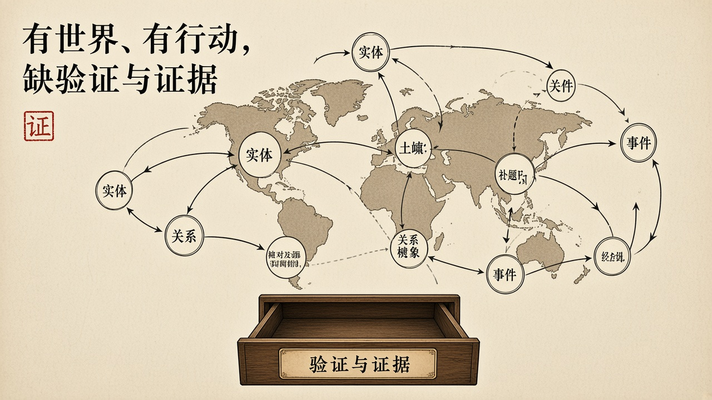
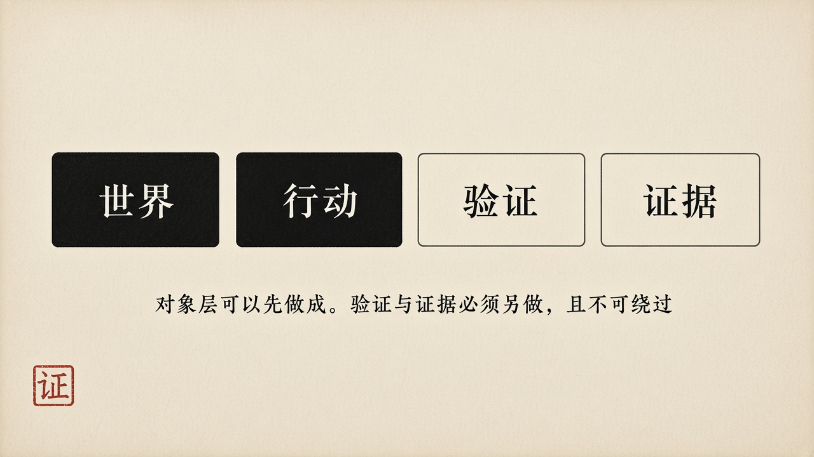

经过
Palantir 的产品把分散的数据源拉到同一张图上。Gotham、Foundry 不是演示文稿。它们在情报、国防、公共卫生、工业里被真正使用。官方表述是「数据、逻辑、行动与安全」的四重整合。本体明确包含动能元素：行动类型、函数、动态安全。行动不是报表上的建议，是可以写回业务系统的操作。权限不是登录框，是对象级的可见性与可写性。它能够回答：这是什么，它与什么相关，可以做什么，谁可以做，做了什么。
这些是对象层上的高峰。使命软件要执行的托付，发生在具体世界里：哪一架飞机、哪一位患者、哪一笔清算、哪一次补给。没有世界模型，软件只能操作自己的内部状态。没有行动，软件只能显示。没有权限，行动会变成任何人都可以扣动的扳机。Palantir 把这三件做成了工业事实。讨论使命软件工程，不能假装这三件不存在，也不能把它们写成已经足够。
缺的是另外两件。验证：这个行动是对的吗？依据是什么？规则之间是否一致？证据：能否重建？检查的过程与结论，是否被保存为可被第三方调取、可被质证的对象，而不是厂商内部的日志。封闭的表示加剧缺的那一截。本体使用自有表示——对象类型、链接类型、行动类型——而不采用 W3C 的 OWL、RDF、SPARQL。Foundry 的本体无法导出为 OWL 文件供其他平台推理。评论者称之为「设计使然的厂商锁定」。这不只是商业策略。一个封闭的、无法导出的、只能由单一厂商实现和验证的知识表示，把信任转移到一家厂商的私有实现上。表示不开放，检验就不能独立。检验不能独立，可信性就停在「我们信任这家公司」——这是托付转移，不是保证。

剖析
定义上，Palantir 让托付变得可被命名：对象、关系、行动类型、角色。命名是定义的前提。命名不是定义的完成。禁区必须写成不可绕过的检查，而不是写成界面上可以关掉的过滤器。能力很强：一次行动可以跨越多个源系统。禁区若只存在于策略配置里，配置变更就是横切变更。横切变更会把已经做过的保证重新打开。
对齐上，平台可以把写下的本体、编出的流水线、跑着的行动在同一张图上对齐。这是 Palantir 真正强的地方。它仍可能与世界上发生的那一件事不对齐——本体是模型，模型会过期，模型会被写错，模型可以成为假使命的精致外壳。红许可证可以长在本体里：规范写「不得外传」，对象模型里加一种「特许角色」。对齐于模型，不等于对齐于托付。
达成上，平台交付的是可用的工作台。工作台可用，不是每一次行动仍在绳子上。分析师按下执行，系统写回业务。达成必须覆盖这一次写回，而不是覆盖「平台已上线」。服务等级协议可以全绿。全绿回答的是平台还活着。活着不是仍在执行托付。
人的位置被做成了产品特性：谁能看、谁能改、谁能行动。这是划界的工业形态。立法仍可能在厂商的默认本体里，而不是在托付者的禁区里。审判若只能在平台内部审计日志中完成，第三方无法质证。封闭表示把审判权留在实现者手里。实现者与验证者若不能分开，人的三个位置只剩一个供应商。
它在案例谱系里的位置必须写清楚。Therac、光大、Knight、CrowdStrike、XZ 证伪的是某一截已经断了的绳子。Palantir 证伪的是另一句更时髦的话：把世界做成系统，使命就会自动被绑住。做成系统是对象。绑住目的是保证。两件事不是一件。有本体、有行动、有权限，仍然可以执行假使命——只是假使命看起来更像一张完整的作战图。
学尚未形成。不能把一家公司的产品写成学科。也不能把「我们与 Palantir 不同」写成已经完成的保证。差异必须被写成可被证伪的主张：验证独立于实现；证据可被第三方检验；表示可被外部解释。三句未做到之前，Palantir 是高峰，不是答案。
